Topic 1.2 - 关系型数据库基本概念¶
1. 数据库核心概念¶
我们先来预览一下数据库的核心概念：
-
数据 - Data：数据是由一个或多个符号组成的序列，通过特定的解释行为赋予意义
-
元数据 - Metadata：描述数据的数据，提供关于数据的结构、属性和关系的信息，具体包括以下三种：
- 描述性元数据 (Descriptive Metadata)：用于发现和识别的资源，例如数据的标题、作者、创建日期等
- 结构性元数据 (Structural Metadata)：数据是如何组织的，以及数据之间的关系，例如数据表中有哪些列，每列的列名和数据格式是什么，以及数据表之间的关系是什么
- 管理性元数据 (Administrative Metadata)：数据是什么时候以及如何创建的，什么时候以及如何修改的，数据的访问权限是什么，以及数据的使用限制是什么
-
数据库 - Database：数据库是一个有组织的数据集合，通常以电子方式存储在计算机系统中，数据库可以是关系型数据库，也可以是非关系型数据库
-
数据库管理系统 - Database Management System (DBMS)：数据库管理系统是一个软件系统，提供创建、管理和操作数据库的工具和功能，DBMS允许用户定义、创建、查询、更新和管理数据库中的数据，同时还提供数据安全性、完整性和并发控制等功能
-
数据库系统 - Database System：数据库与数据库管理系统的结合体，数据库系统包括数据库和数据库管理系统两部分，数据库系统提供了一个完整的环境，用于存储、管理和操作数据
我们用之前举过的 B 站的例子来说明这些概念：
-
数据 - B 站上的视频、用户信息、弹幕、评论等都是数据
-
元数据 - 就拿视频来说：
- 描述性元数据：视频的标题、作者、上传日期等
- 结构性元数据：视频的分辨率、帧率、时长等
- 管理性元数据：视频的上传时间、修改时间、访问权限等
-
数据库 - B 站将所有的视频等数据，都存放在一个或多个数据库中
-
数据库管理系统 - 事实上，一般大型互联网公司的数据库管理系统都不止一种：
- 给外部用户使用的就是客户端，也就是大家能在 APP Store 里下载到的数据库软件，通过这个软件，大家可以对自己的视频进行查询、上传、修改、删除等操作，当然一个内在的访问控制逻辑是大家只能管理自己的视频，对于别人的视频我们只能查询
- 而 B 站的内部员工，比如说视频审核员，他们需要一个专门的数据库管理系统来管理所有的视频数据，这个系统可能是一个内部开发的软件系统，提供了更强大的功能和权限，允许他们对所有的视频进行查询、审核、修改等操作
-
数据库系统 - 就是数据库和数据库管理系统的结合体，B 站的数据库系统包括了存储视频数据的数据库，以及提供管理这些数据的所有软件系统
以下一张图就总结了数据库系统在企业中的作用：
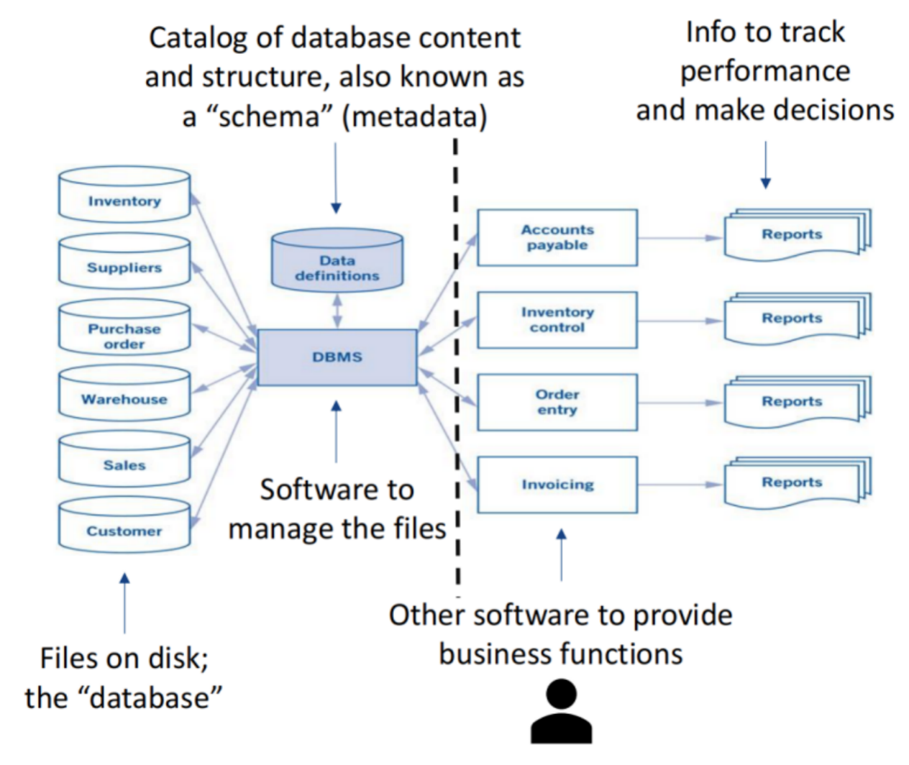
2. 关系型数据库的核心概念¶
(1) 关系型数据库的定义和特点¶
关系型数据库，说白了就是多张表格存储在一起，表格与表格之间是有一定关系的，它的主要特点包括：
-
每张表格都有一个或多个唯一字段来标识实体，这样的字段就叫做主键 (Primary Key, PK)：
- 例如我们有一个客户表，客户 ID 字段可能是主键，因为每个客户都有一个唯一的客户 ID 来标识自己
- 一般情况下，姓名这个字段就不能作为主键，因为可能会有多个客户叫同样的名字，这样就无法唯一标识一个客户了
-
表格之间通过引用字段来描述实体之间的关系，这样用来连接不同表格的字段就叫做外键 (Foreign Key, FK)：
- 例如我们有两个表格，一个是用户表，当中有客户 ID、姓名、地址等字段，另一个是订单表，当中有订单 ID、客户 ID、订单日期等字段
- 这样，在订单表中，客户 ID 就是一个外键，它引用了用户表中的客户 ID 字段，这样我们就可以通过订单表中的客户 ID 来找到对应的用户信息了
-
表格中可能有某些字段是必填的，不能留空，这样的字段就叫做必填字段 (Required Field)：
- 大家平时在网上填一些表的时候，会遇到一些字段旁边有一个星号，这个星号就表示这个字段是必填的，必须要填写才能提交表单
- 例如在用户注册表单中，通常用户名、密码、邮箱等字段都是必填的，因为这些信息对于用户的身份验证和后续的服务提供是非常重要的
-
表格中的字段除了是否是必填字段外，还有其他的一些特征，例如数据类型、默认值、约束条件等：
- 数据类型 (Data Type)：字段的数据类型决定了这个字段可以存储什么样的数据，例如数值、字符串、日期等
- 默认值 (Default Value)：如果在插入数据时没有提供这个字段的值，那么数据库会使用默认值来填充这个字段
- 约束条件 (Constraints)：约束条件是对字段值的一些限制，比方说要求年龄必须大于 0
关系型数据库中有以下一些重要概念：
| 概念 | 定义 |
|---|---|
| 行 (Row / Record / Case) | 表格中的一条记录 |
| 列 (Column / Field / Variable) | 代表一个属性 |
| 表格 (Table / Entity) | 由行和列组成的数据集合，所有行具有相同的列结构 |
| 结构 (Structure) | 一个表格中的列，以及列的数据类型、约束条件等规则 |
| 模式 (Schema) | 数据库中所有表格的结构的集合，以及数据库中表格之间的关系 |
(2) 关系型数据库的规范化¶
规范化 (Normalization) 是关系型数据库设计中的一个重要概念，简单理解就是大表拆小表，来减少冗余和提高数据一致性。
我们来看以下这个例子，来体验以下规范化的过程：
-
我们就拿一个便利店来举例，便利店的数据库内，我们维护两张表，进货表和卖货表
-
首先，进货我们可以记录：进货日期时间、进的什么商品、数量是多少、价格是多少、供货商是谁、哪个员工签收的，同样，卖货我们可以记录，卖货日期时间、卖的什么商品、数量是多少、价格是多少、卖给了哪个顾客、哪个员工卖出的，这样，进货和卖货的表我们就可以写出两个样例出来：
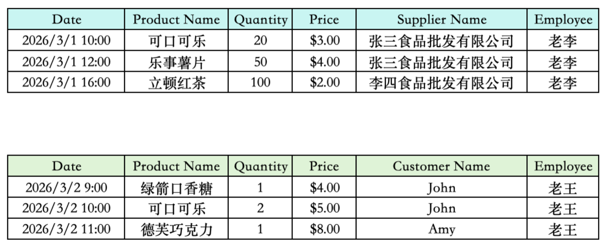
- 这时，便利店老板出了一个问题，那就是顾客中，这两位John其实是两个完全不同的人，他俩同名而已，所以我们提出的解决方案是，建立一个Customer ID，所有顾客的Customer ID是绝对不同的，这样来做到区分顾客：
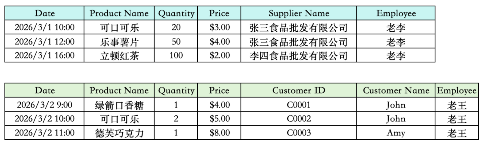
- 之后，我们又发现了一个问题，那就是销售表中，又记录顾客ID，又记录顾客姓名是没必要的，我们可以新建一个顾客表，之后在销售表中只记录顾客ID，如果想知道姓名，只需查找我们新建的顾客表即可：
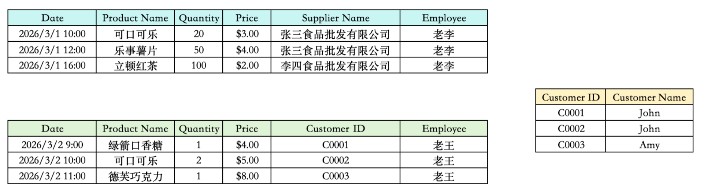
- 有了这个思路之后，我们发现，不仅顾客可以这样处理，供货商、员工、商品，其实都可以分别建表，并且在进货和卖货表中只记录ID：
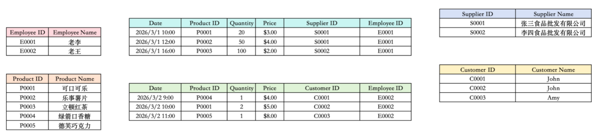
那么以上这个过程就是关系型数据库的规范化过程，表面上来看就是大表拆小表：
- 这样做的一个好处就是减少冗余，如果都拆成小表之后，顾客的姓名、地址、联系方式等信息就只在顾客表中记录一次了，而不是在销售表中每一行都记录一次，这样就减少了数据的冗余
- 这样做的另一个好处就是提高数据的一致性，如果顾客的姓名发生了变化，我们只需要在顾客表中修改一次就好了，而不需要在销售表中每一行都修改一次，这样就提高了数据的一致性
(3) 主键与外键¶
键 (Key) 是关系型数据库中的一个重要概念，但是定义其实很简单，键就是用来唯一标识一行数据的字段或者字段组合
- 也就是说，键的值在表格中是唯一的，不能重复的，这样我们就可以通过这个键来唯一标识一行数据了
- 有的时候，单个字段的值就可以做为键，比方说学生表中，学生 ID 这个字段的值就可以唯一标识一行数据：
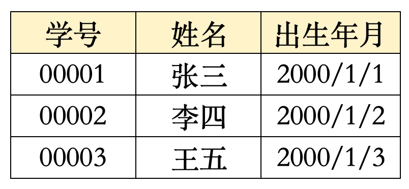
- 但有的时候，可能需要两个或多个字段的值，组合在一起才能作为键，这时我们就叫做复合键，比方说学科表中，学科和学期这两个字段的值组合在一起才能唯一标识一行数据：
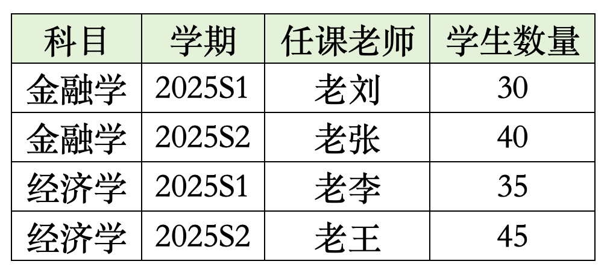
从上面的定义我们可以看出来：
- 一个表中，只要是满足可以唯一标识一行数据的字段或者字段组合，都可以叫做键：
- 因此，一个表中可能有多个字段或字段组合，都满足键的定义，比方说学生信息表中，学生 ID、身份证号、社保号，都是键
- 但是我们在数据库设计中，通常会选择其中一个键作为主键 (Primary Key, PK)，来唯一标识一行数据，其他的键我们就叫做候选键 (Alternative Key, AK)，而被选中的那个键就是主键了
- 我们来看以下这个学生表，表中的 ID、身份证号、社保号这三个字段都是键，我们选择 ID 作为主键，除了这三个字段之外的其他字段都不是键
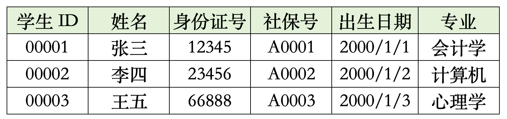
而外键 (Foreign Key, FK) 是用来描述表格之间关系的字段
- 比方说下面的选课记录表中，学生 ID 字段就是一个外键，它引用了学生信息表中的 ID 字段，这样我们就可以通过选课记录表中的学生 ID 来找到对应的学生信息了：
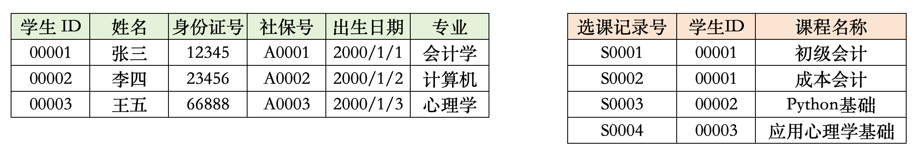
- 外键表示的是，选课表中的学生 ID 这一字段，是一个指向其他表格中主键的引用关系，这样我们就可以通过这个外键来连接两个表格了
- 也就是说，学生 ID 在学生表中是主键，在选课表中是外键
- 大家仔细观察就会发现，选课表里的学生 ID 字段是外键，但是它并不符合我们对键的定义，因为它在选课表中并不能唯一标识一行数据了，可能有多个学生选了同一门课，这时不同行的学生 ID 就是一样的了，所以外键不一定是键，这一点一定要注意
3. 实体关系图¶
(1) 实体关系图的概念¶
实体关系图 (Entity-Relationship Diagram, ERD) 是一种用来表示数据库中实体、属性和关系的图形化工具
- 实体大家就可以简单理解为表格
- 实体关系图描述了一个数据库中有哪些表，表中有哪些字段，哪些字段是主键，哪些字段是外键，以及表格之间的关系是什么样的
实体关系图在描述一个表格的时候，使用的是这种方框的表示法：
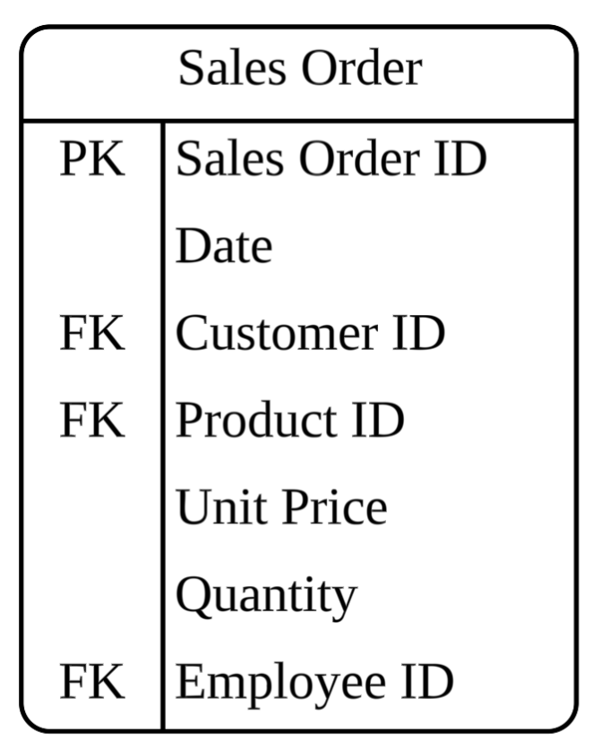
- 方框最上方是表格的名字
- 下面是各个字段的名字，主键前面会有一个 PK 的标识，外键前面会有一个 FK 的标识
- 在有些版本的 ERD 中，还会具体到字段的数据类型、约束条件、是否是必填字段等信息
在描述两个或多个表格之间的关系的时候，使用的是这种线条的表示法：
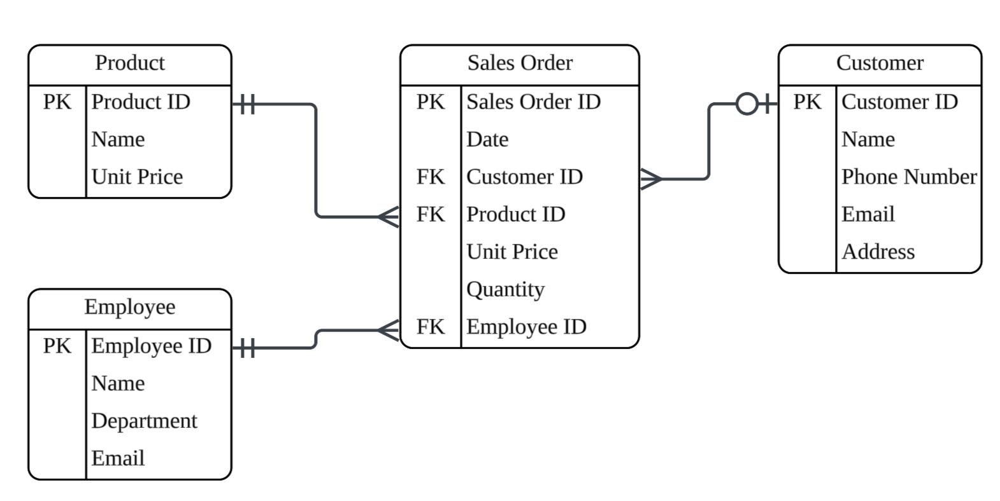
- 线条两端联系着两个存在关系的表格
- 一端连接着引用表中的外键，另一端连接着被引用表中的主键
- 而表中的图形的含义我们来详细讲讲
(2) 实体关系图中的数量关系类型¶
(a) 单边数量关系¶
在上面的 ERD 中：
-
我们连接两个表格的线条有两端，每一端有一个图形，这个图形就是用来表示两个表格之间数量关系的：
-
线条的一端有一远一近两个形状：远的表示最大数量关系，近的表示最小数量关系
首先说一下最小数量关系：最小数量关系表示的是：一方的一个数据，在另一方，最少可以存在1个，还是最少可以存在0个：
-
最小数量关系是1：
- 表示一方的一个数据，在另一方，至少要存在一个数据，也就是说不能没有数据，这时候 ERD 中，一条线近端的图形就是一个竖线
- 比方说，在销售表和商品表中，销售表中的每一行数据都必须要有一个对应的商品信息
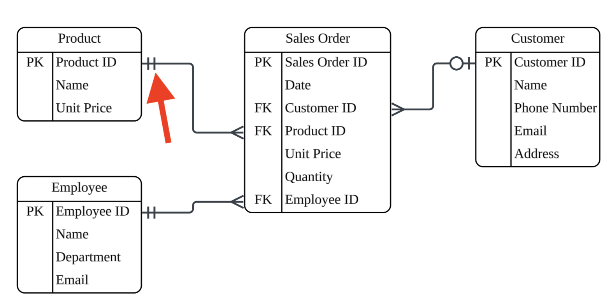
-
最小数量关系是0：
- 表示一方的一个数据，在另一方，至少可以存在0个数据，也就是说可以没有数据，这时候 ERD 中，一条线近端的图形就是一个圆圈
- 比方说，在订单表和客户表中，订单表中的每一行数据可以没有对应的客户信息，因为有时候买东西的客户并没有注册账号，这时候订单表中的客户 ID 字段就可以没有数据了
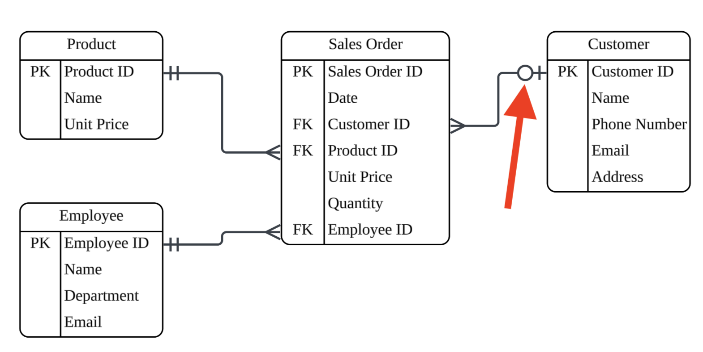
接下来，我们说一下最大数量关系，最大数量关系表示的是：一方的一个数据，在另一方，最多可以存在1个，还是最多可以存在多个：
-
最大数量关系是1：
- 表示一方的一个数据，在另一方，最多只能存在一个数据，这时候 ERD 中，一条线远端的图形就是一个竖线
- 比方说，在订单表和客户表中，订单表中的每一行数据最多只能有一个对应的客户信息，因为一个订单不可能同时属于多个客户
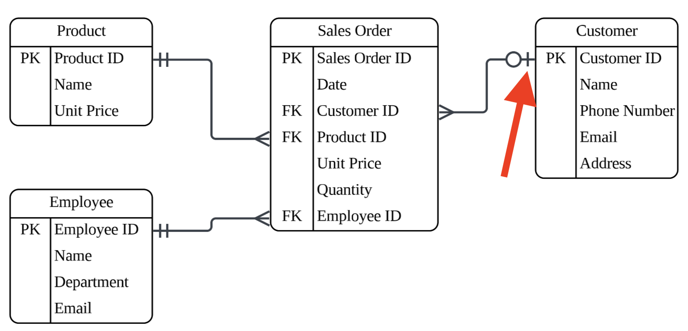
-
最大数量关系是多：
- 表示一方的一个数据，在另一方，最多可以存在多个数据，这时候 ERD 中，一条线远端的图形就是一个爪子
- 比方说，在订单表和客户表中，客户表中的每一行数据最多可以有多个对应的订单信息，因为一个客户可能会有多个订单
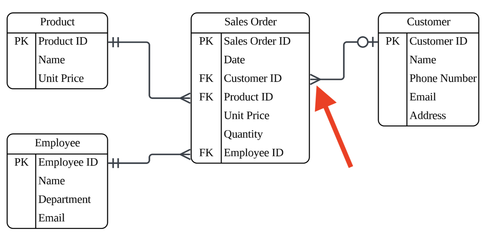
最大和最小关系组合在一起，就是我们要讨论的的数量关系类型了：
- 根据最小为1或0，最大为1或多，我们总共可以组合出这4种情况：
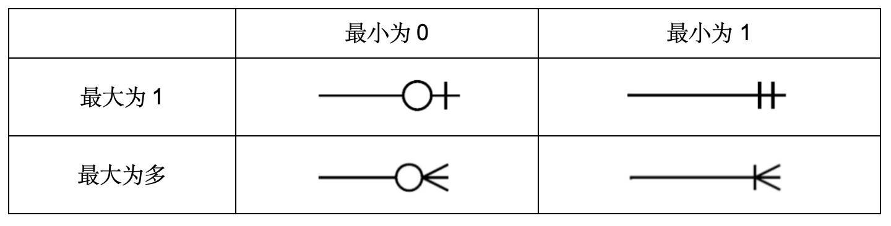
- 但是在实际绘制 ERD 的时候，我们只分这3种情况：
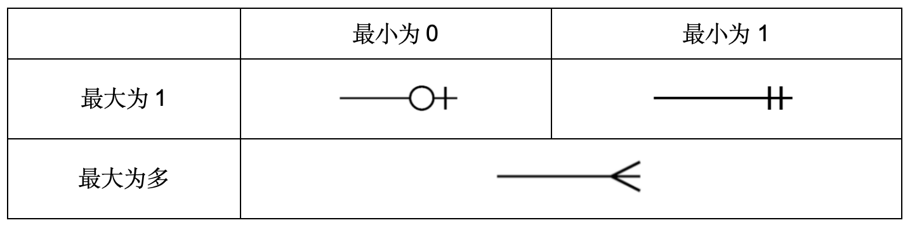
- 也就是说，最大为多的时候，我们就不区分最小为0或1了，这么做的原因是，最大为多的时候，最小为0或1的重要性并不大了
(b) 双边数量关系¶
刚才介绍了这么多，其实都在讲单边数量关系，接下来我们要说就是双边数量关系了，具体来说有三种：
第一种是一对一关系 (One-to-One)：
-
表格 A 与 表格 B 存在一对一表示：
- 表格 A 中的一行数据，在表格 B 中最多只能有一行数据与之对应
- 反过来也是一样的，表格 B 中的一行数据，在表格 A 中最多只能有一行数据与之对应
-
具体来说，一对一关系还可以分为以下三种：
-
最小数量关系一方是0，另一方是1的情况：
- 表格 A 中的一行数据，在表格 B 中可以没有数据与之对应，也可以有一行数据与之对应
- 反过来，表格 B 中的一行数据，在表格 A 中必须要有一行数据与之对应
- 这时候，必须方的主键将作为非必需方的外键
- 一个例子是订单和付款之间的关系，一个付款一定对应一个订单，但是一个订单不一定有对应的付款：

-
最小数量关系都是1的情况：
- 表格 A 中的一行数据，在表格 B 中必须要有一行数据与之对应
- 反过来也是一样的，表格 B 中的一行数据，在表格 A 中必须要有一行数据与之对应
- 这时候，外键可以在任意一方
- 一个例子是员工和员工卡之间的关系，一个员工必须要有一个员工卡，一个员工卡也必须要对应一个员工：
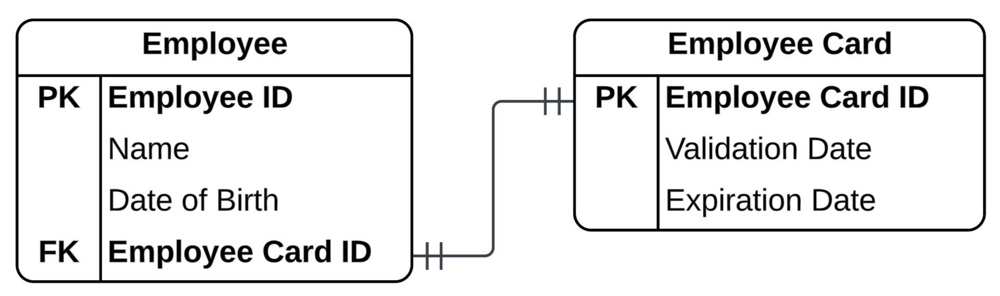
-
最小数量关系都是0的情况：
- 表格 A 中的一行数据，在表格 B 中可以没有数据与之对应
- 反过来也是一样的，表格 B 中的一行数据，在表格 A 中可以没有数据与之对应
- 这时候，外键可以在任意一方
- 一个例子是学生和储物柜之间的关系，一个学生可以有一个储物柜，也可以没有储物柜；一个储物柜可以分配给一个学生，也可以没有分配给任何学生：
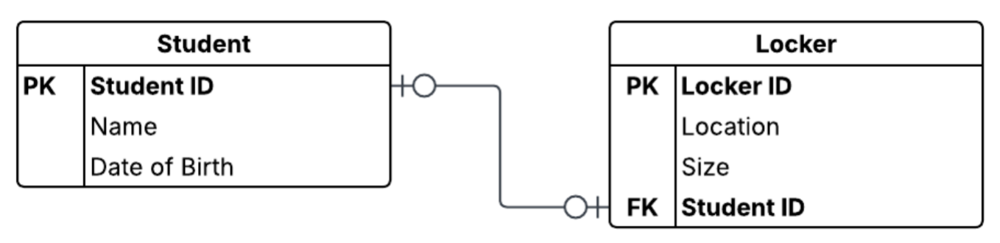
-
第二种是一对多关系 (One-to-Many)：
-
表格 A 与 表格 B 存在一对多关系：
- 表格 A 中的一行数据，在表格 B 中最多只能有一行数据与之对应
- 反过来，表格 B 中的一行数据，在表格 A 中可以有多行数据与之对应
- 这时候，主键在1这一方，外键在多这一方
-
比方说以下这两种关系就是常见的一对多关系：
- 订单与客户之间的关系，一个订单只能对应一个客户，但是一个客户可以有多个订单：
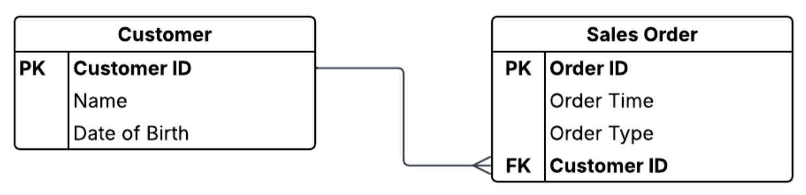
- 订单与供应商之间的关系，一个订单只能对应一个供应商，但是一个供应商可以有多个订单：
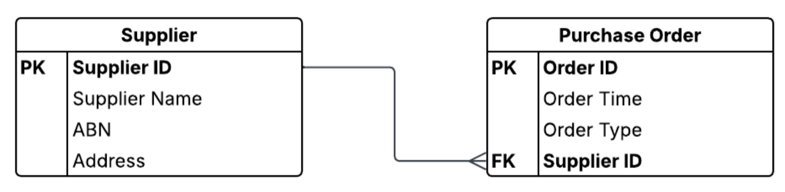
第三种是多对多关系 (Many-to-Many)：
-
表格 A 与 表格 B 存在多对多关系：
- 表格 A 中的一行数据，在表格 B 中可以有多行数据与之对应
- 反过来，表格 B 中的一行数据，在表格 A 中也可以有多行数据与之对应
-
大家可以自己想象一下，多对多关系怎么在表格中表示呢，其实单纯的两个表格是无法表示多对多关系的
-
这时候，需要在两者之间建立一个关联表，关联表中包含两者的主键作为外键
-
比方说以下两种关系就是常见的多对多关系：
- 老师与课程之间的关系，一个老师可以教多门课程，一门课程也可以有多个老师来教，这个时候我们直接用老师和课程ID来共同作为关联表的主键：
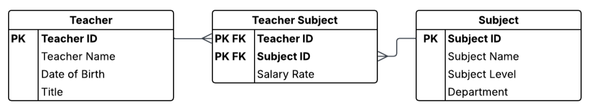
- 医生与病人之间的关系，一个医生可以看过多个病人，一个病人也可以看过多个医生，这时候，我们可以额外再指定一个
Appointment ID字段，来作为关联表的主键：
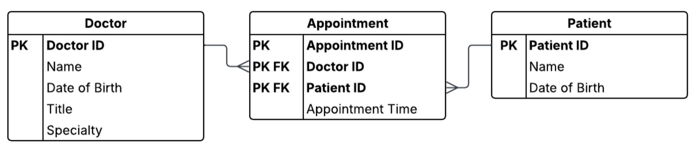
(3) 特殊的数量关系¶
除了上面一些常见的数量关系外，有些业务场景下还会有一些特殊的数量关系，我们只需简单了解即可。
(a) 自引用关系¶
自引用关系指的就是一个表可以引用自己，我们来看以下一些例子就一目了然了：
- 自引用一对一关系，比如说个人信息表中，配偶 ID 就是一个自引用的外键，指向同一个表格中的主键，而且一个人只能有一个配偶，所以是自引用的一对一关系：
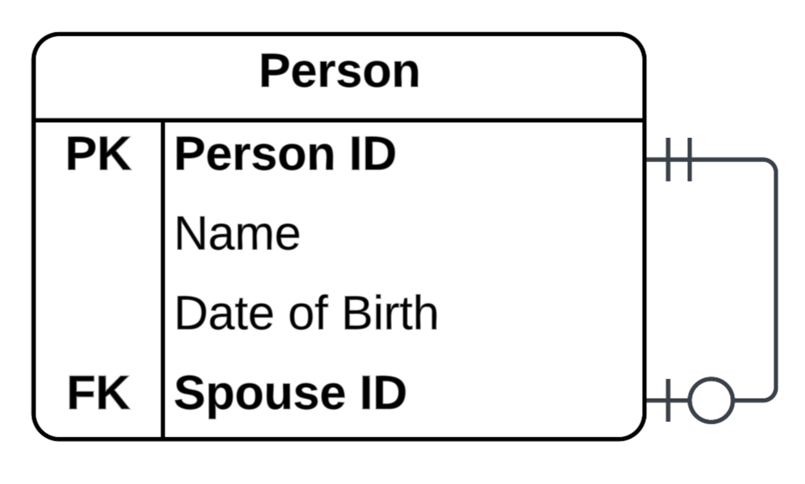
- 自引用一对多关系，比如员工表中的经理 ID 就是一个自引用的外键，指向同一个表格中的主键，而且一个经理可以有多个员工，所以是自引用的一对多关系：

- 自引用多对多关系，比如运动员信息表中，任意两个运动员之间都可能是队友，所以是自引用的多对多关系，因此需要额外的一个关联表来表示运动员之间的队友关系：
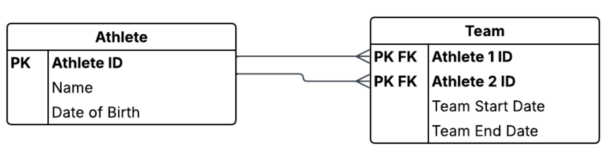
(b) 使用多个外键引用同一表¶
有些业务场景下，一个表中可能会有多个字段，都是外键，并且都引用同一个表格
- 我们来看以下这个例子：
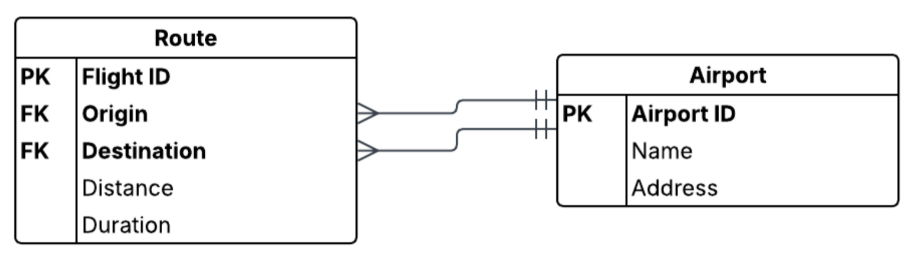
- 在这个航班表中，起点字段和终点字段都是外键，并且都引用同一个机场表格
(c) 一对一关系和一对多关系使用关联表¶
我们之前介绍，多对多关系需要使用关联表来表示：
- 但是有些业务场景下，一对一关系和一对多关系也需要使用关联表来表示
- 这种情况想要强调的重点是，两个表之间的关系也是我们想着重强调的一个重要方面
- 我们想专门使用一个单独的表格来记录两个表之间的关系，这样会更清晰直观一些
我们来看以下这个例子：
- 一对一关系使用关联表，虽然说学生和柜子之间是一对一关系，但是我们使用一个单独的关联表来记录学生和柜子之间的分配关系会更直观一些：
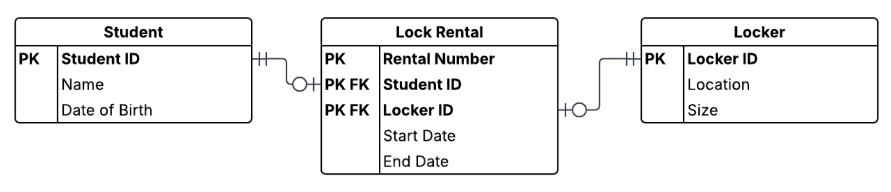
- 一对多关系使用关联表，虽然说员工和部门之间是一对多关系，但是我们使用一个单独的关联表来记录员工和部门的关系会更灵活直观一些：
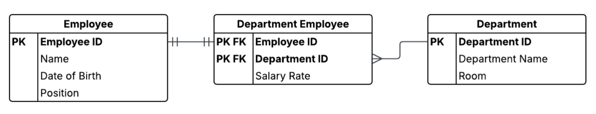
(d) 三元多对多关系¶
上面我们介绍过使用关联表来表示两个表之间的多对多关系：
- 但是有些业务场景下，可能会有三个表之间的多对多关系，这时候我们就需要使用一个关联表来同时引用这三个表了
- 这三个表中的主键都要作为关联表中的外键来使用，这样我们就可以通过这个关联表来连接这三个表了
- 我们来看以下这个例子，对于一个存货记录来说，它由三个要素构成：产品、仓库、供货商，并且这三个要素之间是多对多关系的，这时候我们就需要一个关联表来同时引用这三个表了：

4. 实体关系图的设计¶
实体关系图的设计从粗到细分为三个层级：
-
概念层 (Conceptual Level)：相当于一开始 ERD 的草图，主要关注于数据库的高层次结构
- 只设计了数据库当中有哪些表格，以及表格之间是什么关系，还没有设计表中的字段
- 在一开始设计的时候是允许多对多关系的
-
逻辑层 (Logical Level)：逻辑层的 ERD 主要关注于数据库的逻辑结构
- 设计了表格中有哪些字段，哪些字段是主键，哪些字段是外键
- 有些实体在细化讨论的时候，可能会被拆成更细分的实体，例如销售这个业务可能会被拆成订单表和付款表
- 多对多关系也必须拆成使用关联表来表示了
-
物理层 (Physical Level)：物理层的 ERD 主要关注于数据库的物理实现
- 设计了数据库中表格的具体实现细节，例如字段的数据类型、约束条件等
- 这个时候离部署到数据库就差临门一脚了
但是严格意义上来讲，这三个层级的界限是比较模糊的，由于我们不需要掌握数据库设计，所以不同颗粒度的 ERD 大家能看懂就可以了。
5. 实体关系图案例¶
下面我们来看几个实体关系图的案例，来加深一下对 ERD 的理解。
(1) 电影数据库¶
概念设计：
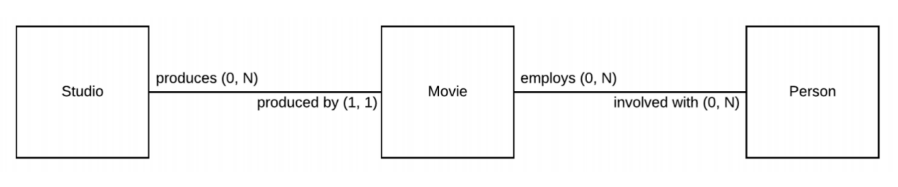
逻辑设计：
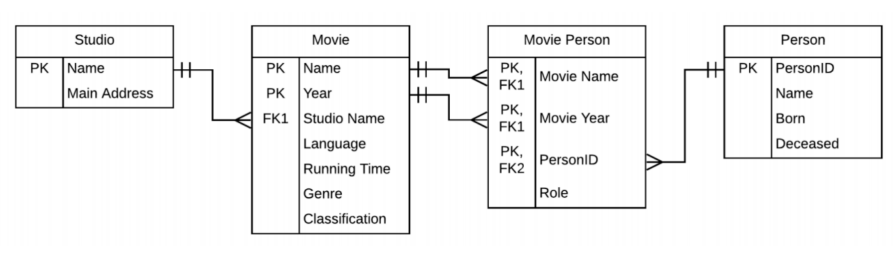
(2) 租车数据库¶
概念设计：
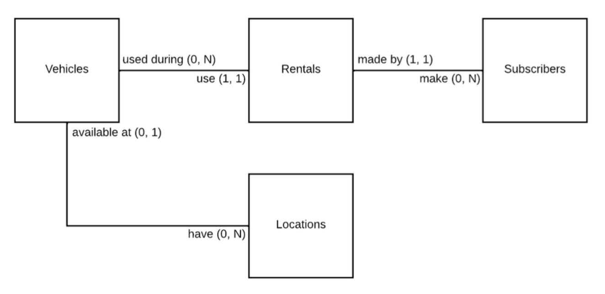
逻辑设计：
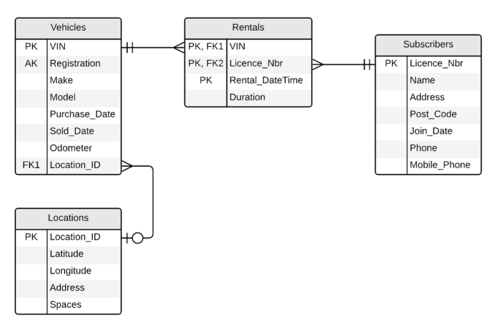
(3) 航班数据库¶
概念设计：
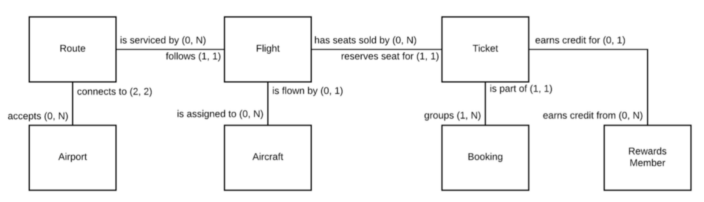
逻辑设计：
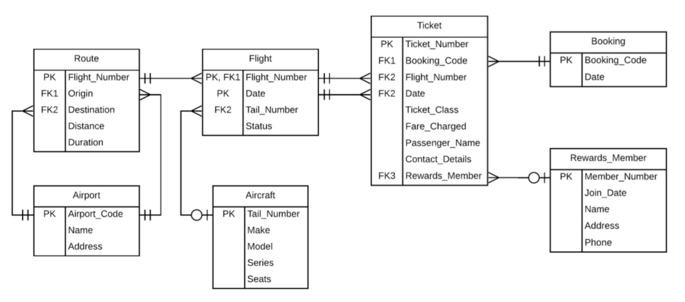